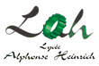
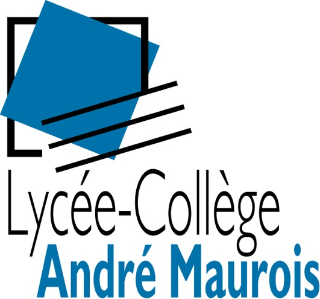

Cette licence professionnelle a été effectuée dans le cadre d'un contrat en alternance avec une entreprise Allemande (Orsay Gmbh) en raison d'un rythme de 2 jours de cours pour 3 jours en entreprise par semaine.
Elle a pour but de former des administrateurs systèmes et réseaux afin que nous puissions développer, maintenir et mettre en place de nouveaux services et applications web en entreprise.
Formation avant tout technique complétée par une approche de gestion et coordination de projet informatique.
Mémoire de fin d'étude - De la gestion de parc informatique en centrale d'achat à l'infrastructure réseau en magasin d'une entreprise de prêt à porter : Orsay
Voir section expériences.
Twitwo
Projet d'une durée de 3 mois au sein d'une équipe de 3 personnes. L'objectif de ce projet était de développer un site web reprenant les principes du célèbre site "Twitter".
Le site a été développé autour de l'architecture MVC et devait offrir une interactivité avec l'utilisateur (PHP/MySQL) tout en utilisant les dernières normes en vigueur.
Mon rôle dans cette équipe projet était d'avoir développer les expressions régulières (Regex).
Amaranche
Projet d'une durée de 7 mois au sein d'une équipe de 5 personnes.
L'objectif de ce projet était de travailler sur l’ensemble du cycle de vie d’un projet (étude préliminaire, dossier d’analyse, réalisation et bilan) concernant l’évolution du système d’information d'une entreprise fictive (Amaranche).
Le but étant de répondre au mieux aux besoins de l’entreprise en nous laissant la tâche de nous organiser au sein de l’équipe comme une équipe projet (chef de projet, architecte réseau, technicien, etc.).
Concernant la partie technique, il fallait migrer et mettre en place de nouveaux services modernes et adaptés aux besoins d’Amaranche comme la VOIP/DNS/DHCP/VPN, serveur mail, supervision réseau et un développement d’une interface simplifiée concernant la gestion des stocks.
Mon rôle dans l’équipe était de mettre en place le service mail de type Dovecot/Postfix, l’IPBX de type Trixbox ainsi que le VPN de type OpenVPN.
Informatique et réseaux pour l'industrie et les services techniques

Projet d'une durée de 6 mois à visée industriel au sein d'une équipe de 3 personnes, il devait permettre de mettre en évidence les potentiels cognitifs d'enfants autistes âgés de 5 à 12 ans pour le compte d'une université Hollandaise.
Ces tests prennent la forme de jeux sur ordinateur et chaque membre de l'équipe développait un jeu avec des tests qui lui sont propres.
J'étais en charge de développer une application regroupant le jeu du "où est Charlie" et du "jeu des différences" où l'enfant devait cliquer sur les bonnes zones de l'image pour lui permettre d'évoluer via un système de notation (en fonction du temps et erreurs commises).
Le jeu devait répondre à un besoin d'évolutivité dans le temps en le concevant de manière à ce qu'on puisse changer ses paramètres (chronomètre, nombre de bons/mauvais clics admis, etc.).
Sur le plan technique, l'expression du besoin et l'analyse a été fait par l'intermédiaire du langage UML (diagramme de cas d'utilisations) et le développement s'est effectué en C# à l'aide du framework XNA via l'IDE Visual Studio 2010.
Licence d'économie gestion
Option de spécialité S.V.T.
Spécialité Physique-Chimie
